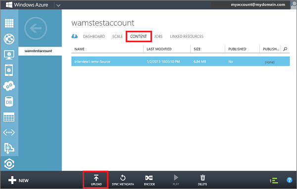
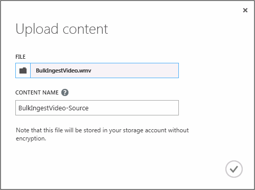
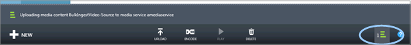
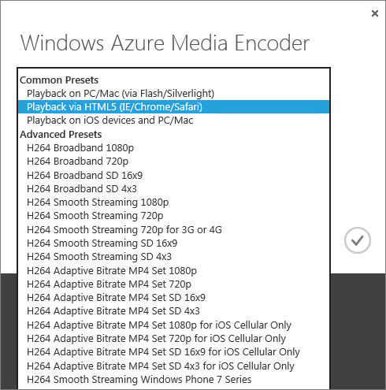

The Windows Azure Media Services content view allows you to manage media content for your Media Services account.
Currently you can perform the following content operations directly from the portal:
Click the Content view at the top of the page. Your view should look similar to the screen shot below.

Click the Upload button at the bottom of the portal.
In the Upload Content dialog, click Browse Your Computer and browse to the desired asset file. Click the file and then click Open or press Enter.

In the Upload Content dialog, click the check button to accept the File and Content Name.
The upload will start and you can track progress from the bottom of the portal.

Once the upload has completed, you will see the new asset listed in the Content list. By convention the name will have "-Source" appended at the end to help track new content as source content for encoding tasks.
If the file size value does not get updated after the uploading process stops, press the Sync Metadata button. This synchronizes the asset file size with the actual file size in storage and refreshes the value on the Content page.
In the Windows Azure Media Encoder dialog, choose from one of the common or advanced encoding presets.
Common Presets
Advanced Presets

Currently, the portal does not support all the encoding formats that are supported by the Media Encoder. It also does not support media asset encryption\decryption. You can perform these tasks programmatically, for more information see Building Applications with the Media Services SDK for .NET and Task Preset Strings for Windows Azure Media Encoder.
In the Windows Azure Media Encoder dialog, enter the desired friendly output content name or accept the default. Then click the check button to start the encoding operation and you can track progress from the bottom of the portal.